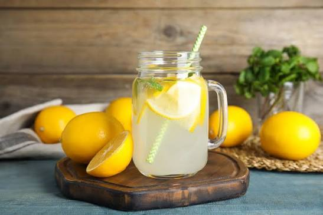
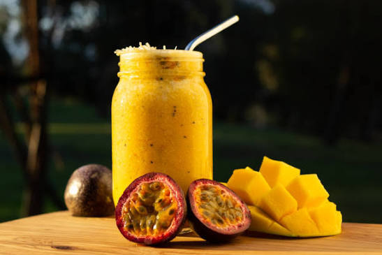

SUCO DE LARANJA
★★★★★ 4,9
Suco natural de laranja, feito na hora. 400 ml.
R$ 10,00
★★★★★ 4,9
Suco natural de laranja, feito na hora. 400 ml.
R$ 10,00

★★★★★ 4,7
Suco natural de laranja com um toque cítrico de limão. 400 ml.
R$ 9,00

★★★★★ 4,8
Suco de maracujá servido bem gelado para refrescar a noite. 400 ml.
R$ 11,00